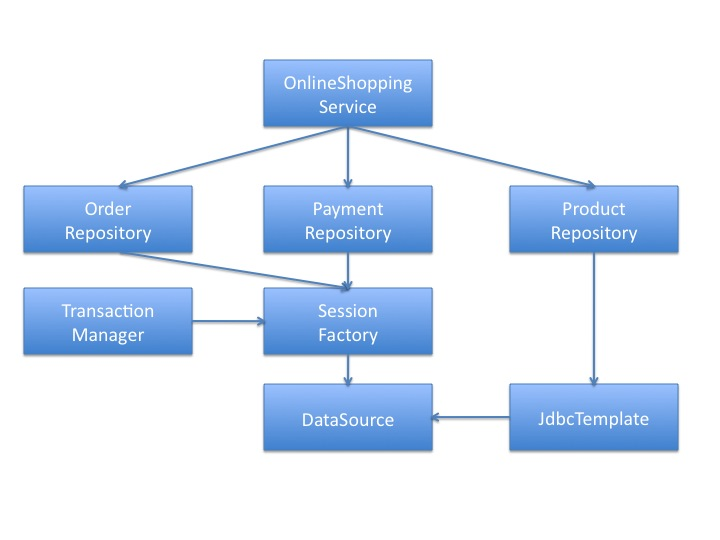

In this yet another important lab, we will try different options related to managing transactions for our beans.
There are many classes in this example, so spend some time getting familiar with these classes.
entity package. These entities are the ones which have been mapped to the respective tables in the database.OrderRepository , PaymentRepository and ProductRepository. Please go through with the respective implementation classes as well.OnlineShoppingService interface and it’s implementation OnlineShoppingServiceImpl defined in the service package. This service class will act as an entry point in the application. The diagram below gives you a quick idea about the overall configuration.
Since we are using annotations, only the infrastructure configuration is found in ex-config.xml file. Please review the configuration and see if you are able to relate it correctly to the code.
Before you run the test class, you need to create a small table whose script i’ve provided you in the resources folder. Also for this example,we will run HSQLDB in server mode, so that we can concurrently browse the tables from some backend tool and also be able to run the test code. I’ve shared a file by the name starthsqldb.bat in resources folder to help you in running HSQLDB in server mode. Please edit the batch file if it fails.
By default when you run the test class, everything will commit and you will be able to see the changes getting reflected in the following tables: tx_orders , tx_payments and tx_products.
If you are reading this conclusion before completing the lab, then we haven’t yet concluded. Thank you!